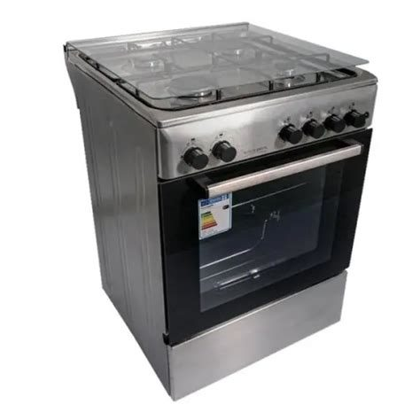

Installation d’un four

Installation d’un four : identifier chaque câble de l’installation avant de finir le branchement.
- Étape 1 — Couper l’électricité dans la cuisine.
- Étape 2 — Chercher le fil de terre : une borne du multimètre sur l’évacuation (objet métallique relié à la terre), l’autre sur le fil testé, pour mesurer la résistance (contact = terre).
- Étape 3 — Chercher le neutre : multimètre branché sur la terre et l’autre borne sur un des fils restants à identifier (si tension mesurée = phase).
- Étape 4 — Une fois chaque câble identifié, finir le branchement puis rallumer le courant.
Installation électrique Multimètre Prise de terre Sécurité